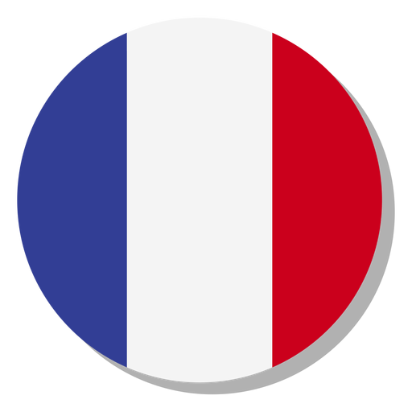
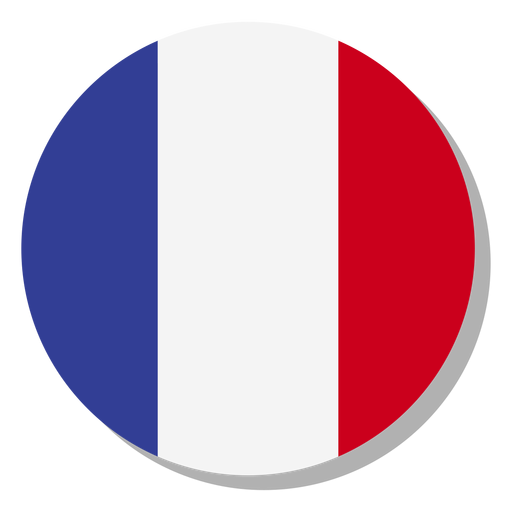

STATUTUL SI REGULAMENTUL DE FUNCTIONARE
Cap. I. Obiectivele activităţii:
Articol unic:
- Centrul are drept scop promovarea cercetǎrii ştiinţifice în domeniul francofoniei dintr-o perspectivǎ interculturalǎ şi interdisciplinarǎ, dorind sǎ participe prin această la schimbul naţional şi internaţional de idei în domeniu.
- Centrul va acordă o atenţie deosebitǎ evidenţierii prezenţei României în lumea francofonă contemporanǎ, precum şi operelor scriitorilor români de expresie francezǎ în contextul dialogului între culturi.
- Centrul îşi propune sprijinirea şi promovarea membrilor tineri, doctoranzi şi studenţi la masterat, în vederea perfecţionǎrii profesionale, prin obţinerea unor burse de cercetare şi documentare.
- Centrul îşi propune valorificarea cercetǎrii ştiinţifice prin publicaţia proprie DIALOGUES FRANCOPHONES, prin publicarea unor cărţi şi prin colaborǎri la reviste ştiinţifice de prestigiu din ţarǎ şi din strǎinatate.
- Centrul va promova realizarea unor programe multimedia în sprijinul cercetării impactului francofoniei în condiţiile specifice ale societăţii contemporane.
- Cu prilejul Zilelor Francofoniei, Centrul va organiza anual un colocviu ştiinţific cu participare naţională şi internaţională.
Cap. II. Resurse materiale
Art. 1. Patrimoniul Centrului de Excelenţă:
- subvenţie de la stat.
- proiecte de tip Grant prin CNCSU.
- sponsorizări şi donaţii..
Art. 2. Modul de utilizare a resurselor se aprobă la propunerea Consiliului ştiinţific al Centrului de Excelenţă şi conducerea Universităţii de Vest din Timişoara, cu respectarea dispoziţiilor legale. Utilizarea resurselor, în conformitate cu legea, poate fi:
- pentru dezvoltarea bazei materiale proprii;
- pentru dezvoltarea bazei materiale pentru învăţămăntul postuniversitar de studii aprofundate, masterat şi doctorat;
- burse de cercetare şi instruire;
- taxe de participare că membru în organisme de profil;>taxe de participare că membru în organisme de profil;
- taxe pentru participare la manifestări cultural-ştiinţifice;
- editarea de carte universitară;
- remunerarea personalului angajat (inclusiv în sistem de cumul cu plata cu ora) pentru realizarea contractelor;
- acoperirea cheltuielilor pentru unităţile componente.
Art. 3. Participarea prin cota de 0,5 - 20% la veniturile fundului special al Universităţii de Vest dinTimişoara.
Art. 4. Centrul de Excelenţă deţine, în conformitate cu dispoziţiile legale în vigoare, spaţiu pentru studiu şi cercetare, precum şi alte bunuri care înlesnesc activitatea de cercetare şi sunt utilizate de toţi membrii.
Art. 5. Veniturile, bunurile imobile şi mobile ce vor fi dobândite de Centrul de Excelenţă, în conformitate cu prevederile legale, se constituie în patrimoniu al Centrului, servind la realizarea scopurilor prevăzute în statut
 
